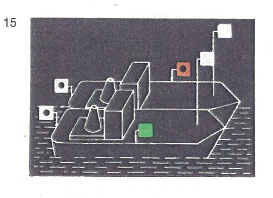
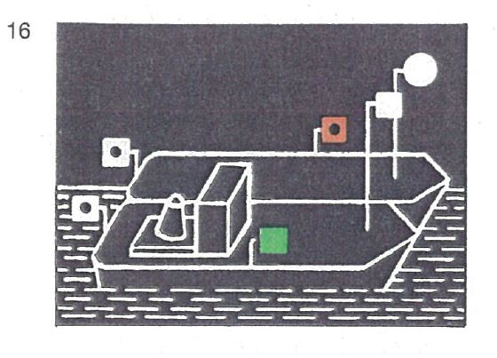

| 1. | Gekuppelte Fahrzeuge in Fahrt müssen bei Nacht führen: | |
| | a) | auf jedem Fahrzeug das Topplicht nach § 3.08 Nr. 1 Buchstabe a; auf Fahrzeugen ohne Maschinenantrieb kann dieses Topplicht jedoch an einer geeigneten Stelle und nicht höher als das Topplicht des Fahrzeugs oder der Fahrzeuge mit Maschinenantrieb durch das Licht nach § 3.09 Nr. 3 ersetzt werden; |  |
| | b) | die Seitenlichter nach § 3.08 Nr. 1 Buchstabe b; diese Lichter müssen an der Außenseite der äußere Fahrzeuge gesetzt werden, und zwar möglichst in gleicher Höhe und mindestens 1,00 m tiefer als das niedrigste Topplicht; |  |
| | c) | auf jedem Fahrzeug ein Hecklicht auf dem Hinterschiff. | |
| | | | |
| 2. | Dieser Paragraph ist weder auf Kleinfahrzeuge, die nur Kleinfahrzeuge längsseits gekuppelt führen, noch auf längsseits gekuppelte Kleinfahrzeuge anzuwenden; für diese Kleinfahrzeuge gilt § 3.13 Nr. 2 und 3. | |